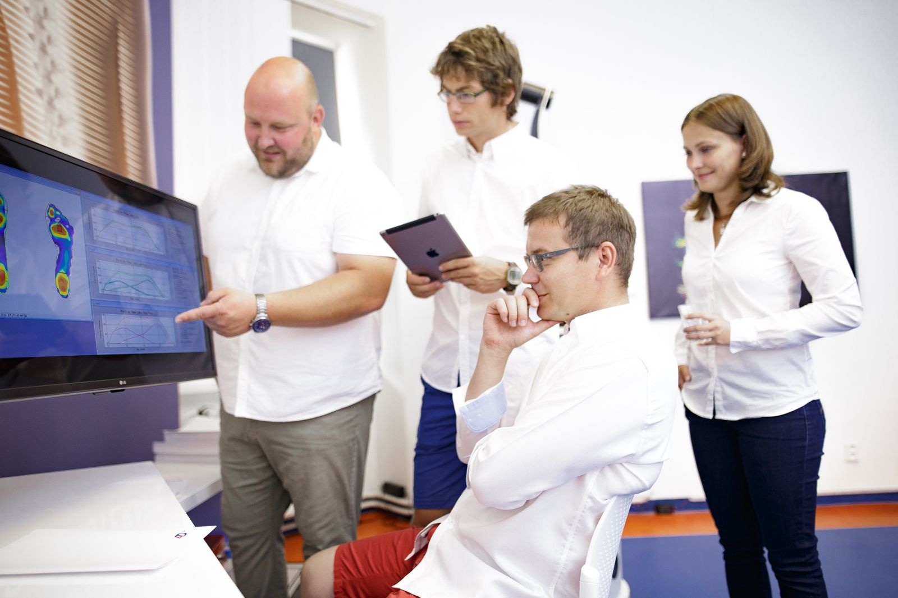

0DBod
Všechno začíná
tady, kde to bolí.
Bolest je bod – místo, které cítíte. Začneme u něj, vyslechneme vás a zeptáme se, odkdy a co už jste zkoušeli. Ale u bodu nezůstaneme.
Bolest je jen bod. Za ním je tělo, které stojí, chodí a hýbe se – a čas, ve kterém se může změnit. Proto se díváme na všechno najednou. Proto 4D.
Bolest je bod – místo, které cítíte. Začneme u něj, vyslechneme vás a zeptáme se, odkdy a co už jste zkoušeli. Ale u bodu nezůstaneme.
Bolest často vzniká jinde, než kde ji cítíte. Fyzioterapeut se proto podívá na celou osu těla – jak sedíte, stojíte, dýcháte a kde tělo něco kompenzuje. Ruce a oči, které žádný přístroj nenahradí.

Na tlakové desce Matscan uvidíte vlastní otisk chodidel – kde nesete víc váhy, kde je noha přetížená a jestli jednu stranu šetříte. Plochu, na které stojí celé tělo.

Formetric 4D promítne na záda světelný rastr a sestaví trojrozměrný model páteře. Uvidíte její křivku, rotaci i svalovou dysbalanci – a my uvidíme, kudy vede cesta ven. Bez záření, takže i u dětí.
 Jak diagnostika probíhá →
Jak diagnostika probíhá →
Tělo se mění – a my to měříme. Opakované měření ukáže, jestli cvičení funguje, a plán podle toho upravíme. Jsme s vámi týdny, měsíce, někdy roky. Proto se jmenujeme 4D.
Napište nám, zavolejte, nebo si rovnou vyberte termín. Zbylé tři rozměry projdeme spolu.
 Tomáš
Tomáš Lukáš
Lukáš Petra
Petra David
David Dita
Dita Adéla
Adéla Lucie
Lucie Andrea
Andrea Jana
Jana Dominika
Dominika